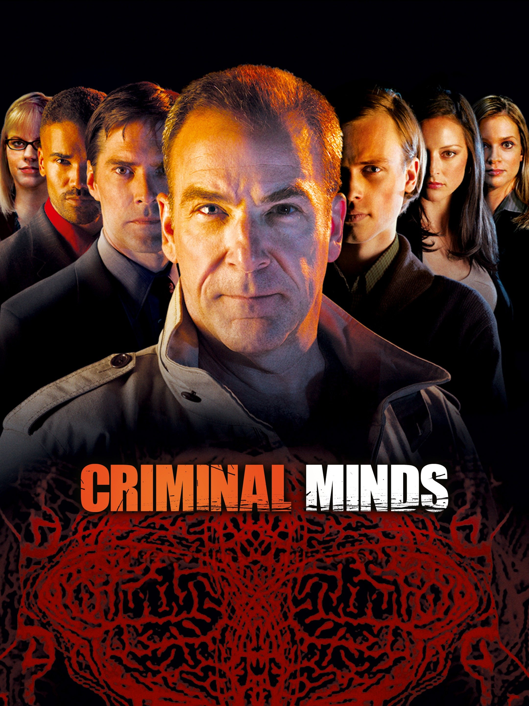
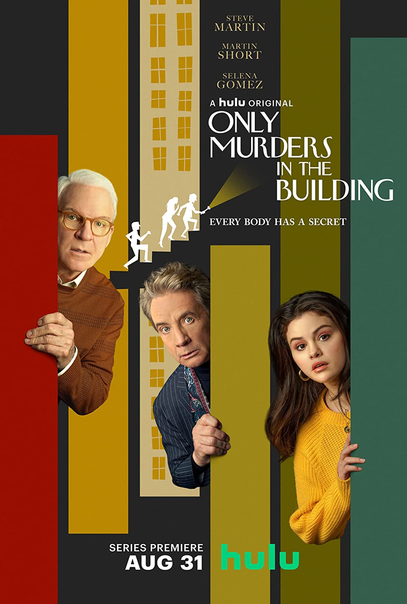
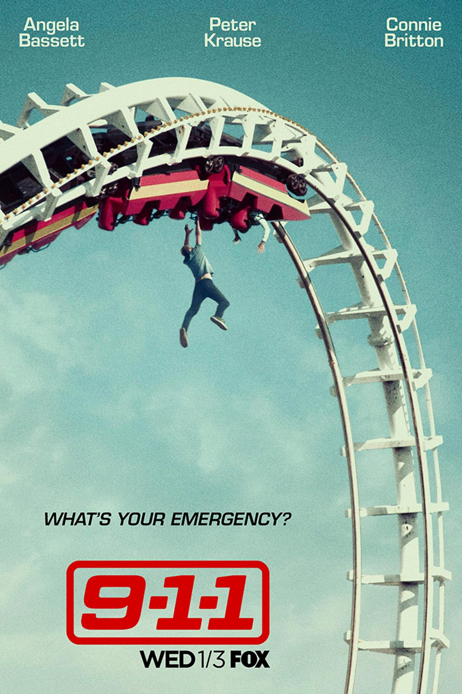

Топ-5 сериалов
Все (ну почти) сериалы хороши, но есть и любимчики
Эта страница посвящена самым
крутым и любимым
сериалам. Enjoy the ride!
Почему именно эти сериалы?
Потому что.
На самом деле, эти сериалы просто очень хороши.
Здесь можно отслеживать сериалы, а также оставлять
отзывы и рейтинги




Топ-5:
- Wednesday: Умная, саркастичная и зачастую бессердечная Уэнздей Аддамс расследует череду
убийств и находит новых друзей (и врагов) в академии Невермор.
- Criminal Minds: Агенты ФБР разгадывают истинные мотивы преступлений.
Криминальная драма о психоанализе на службе у закона
- Psych: Шон Спенсер - молодой консультант полиции в Санта-Барбаре, чья тонко развитая
наблюдательность и неординарные дедуктивные способности позволяют
ему убедить всех в том, что он ясновидящий.
- Only Murders in the Building: Трое незнакомцев, разделяющих общую
одержимость историями о настоящих преступлениях,
внезапно оказываются втянуты в реальное расследование убийства,
произошедшего в их многоквартирном доме.
- 9-1-1: Процедурал о представителях сразу четырёх незаменимых профессий:
полицейских, парамедиков и пожарных, а также диспетчеров,
которые отвечают на звонки неотложной помощи.
Для просмотра сериалов можно использовать следующие платформы:
- ORORO: Данный сайт позволяет смотреть сериалы/фильмы в оригинале с
субтитрами на нужном языке
- MyFlixer: Данный сайт позволяет смотреть сериалы/фильмы в оригинале с
субтитрами на английском языке